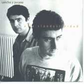

|  |
|
esto es, lo que dicen, que tiene,
vivir en un barrio así
aquí no pasan cosas casi nunca
y cuando pasan es como si no pasaran
sólo los taxis se acercan
la otro noche un par de tipos
vinieron a preguntar puerta por puerta
el paradero del más loco del barrio
como que la mejor chica de las camas
contó sus rebeldías en comisaría
creyendo ser de algún sitio
los mejores héroes del barrio están entre rejas
y los peores frente a ellas
8siempre es mejor decir sí, que no ?
con 18 años se despidió de tí, de mí,
de su barrrio
de las sombras que no vió
quién sabe si este barrio, existe o no existe
sólo sé que duermo bien
desde que no pago el alquiler
esto es, lo que dicen, que tiene,
vivir en un barrio así
y así son, los que viven, y dicen
que tienen un barrio así